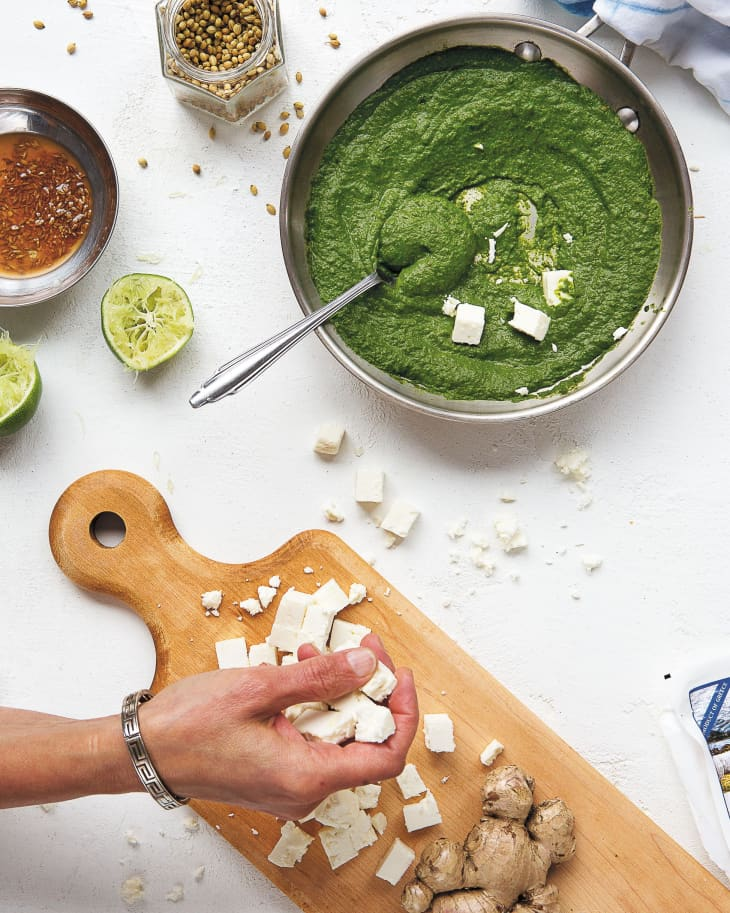

Saag Feta

Recipe Description
Here's a familiar Indian takeout staple — saag paneer — but with the
ingenious substitution of large cubes of feta for paneer (a bit of inspiration
from our 1998 family trip to Athens and near continuous consumption of Greek
salads, which in Greece are just … salads).
The first time I tasted it, it was like when I discovered you can do the
nine times table with your fingers in third grade, which is to say, I just
about lost it. Not only is my mom's spinach gravy infinitely more complex than
that of most versions of saag paneer (I have been known to steal sauce swipes
out of the pan when my mom isn't looking), but I also love the way the feta
gets all soft and pseudo-baked, soaking in all the spices and melting a little
into the gravy. And then you hit the pan with the oiled-up cumin and red chile
powder, which add a whole other level of richness. I would go as far as to say
that I now want all future saag paneer I eat to be with feta. And I bet you
will, too.
Ingredients
- 1/4 cup plus 2 tablespoons ghee or olive oil, divided
- 2 tablespoons coriander seeds
- 2 green cardamom pods, or 1/4 teaspoon ground cardamom
- 1 small yellow onion, diced into 1/2-inch pieces
- 1 tablespoon roughly chopped fresh ginger
- 1 clove garlic, minced
- 1 pound fresh baby spinach (10 to 12 cups)
- 1 1/2 teaspoons freshly squeezed lime juice
- 1 small Indian green chile or serrano chile, roughly chopped
- 1 teaspoon kosher salt
- 6 ounces feta cheese, cut into 1/2-inch cubes (a little over 1/2 cup)
- 1 teaspoon cumin seeds
- 1/4 teaspoon asafetida (optional, but really great)
- 1/4 teaspoon red chile powder
-
Steps
-
In a large pan over medium heat, warm, 1/4 cup of the ghee (or oil).
Once the ghee has melted (or the oil begins to shimmer), add the coriander
and cardamom and cook, stirring, for about 2 minutes, until the seeds start
to brown. Add the onion and cook until it is translucent, 5 to 6 minutes.
Stir in the ginger and garlic and cook for 1 minute more. Add the spinach
and cook until it is just wilted, 4 to 5 minutes.
-
Remove the pan from the heat and add the lime juice, green chile, and salt.
Let cool for 5 minutes. Transfer to a blender and blend into a chunky paste.
Return the spinach mixture to the same pan and set it over low heat.
Stir in 1/2 cup water, then gently fold in the feta, being careful not to
break up the cubes. Cook for 5 to 7 minutes more to soften the feta
slightly and allow it to soak up come of the spinach sauce.
-
While the feta cooks, in a small pan or butter warmer over medium-high heat,
warm the remaining 2 tablespoons ghee (or oil) for 1 minute. Add the cumin
seeds. As soon as (emphasis on as soon as — you don't want your cumin to
burn!) the cumin seeds start to sputter and brown, about 1 minute max,
remove the pan from the heat. Immediately add the asafetida (if using) and
red chile powder.
-
Pour all of the ghee (or oil) mixture into the spinach and feta once that
is done cooking.